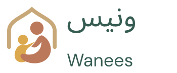
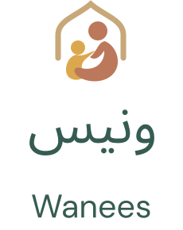
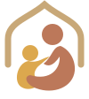

A child, a caring companion, and an open doorway.




Reversed artwork on a quiet dark field.
Keep clear space of at least ¼ of the emblem width around the mark. Minimum emblem width: 24 px on screen, 8 mm in print. Horizontal lockup: 150 px minimum. Stacked lockup: 100 px minimum. Prefer the emblem alone at favicon size.
Never stretch, rotate, add shadows, mirror, or combine with medical symbols. The oryx character is separate from the brand mark.
All SVG marks contain editable vector paths. English lettering is outlined DM Sans; Arabic lettering is outlined Noto Sans Arabic, shaped with HarfBuzz. The supplied PNG is retained only as a concept reference. Local Arabic typographic review and trademark/name clearance remain required. This is an original refinement, not a claim of trademark clearance.